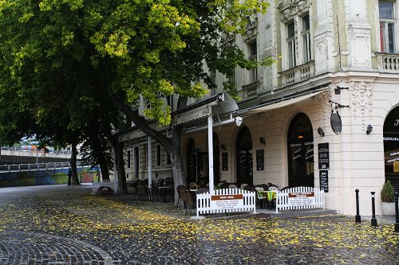
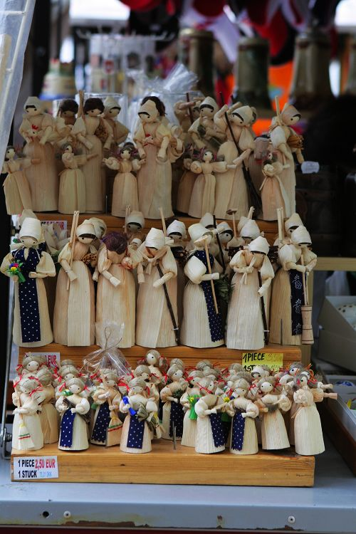
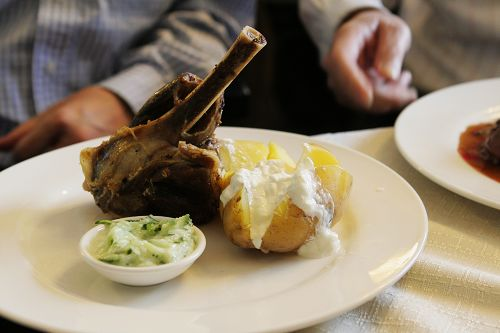

@Slovakia-Bratislava @ Oct 29, 2009
Bratislava是Slovakia的首都，拥有50万居民的Bratislava被称为“多瑙河上的美景”，紧邻匈牙利和奥地利两国边境，位置独特。城市最重要的地标-Bratislava城堡，其次是19位匈牙利君王在此加冕圣史蒂芬王冠的圣马丁大教堂，最著名的是茜茜公主。
我们从Budapest乘汽车到达Bratislava的早晨下着雨，仅仅停留半天时间，更象是路过，或者是去那里用午餐。但我对那儿却留下一些好感和留念，也许是因为一场雨，也许是因为一顿不错的午餐，也许是那儿的朴实？天晓得。这一篇记录比较无聊，好象除了一顿午餐啥也没印象，其实Slovakia的葡萄酒、歌特建筑、它的碉堡城堡以及山脉自然风光还是比较有特点的，只是我们没有在这个点上安排太多时间。
Slovakia国家剧院

Slovakia-偷窥者
这个青铜雕像真的在地面上，那个阴井盖也是雕塑的一部分。他天天趴在地面上面带笑意，其实他是因为偷窥着穿裙子的姑娘而笑，所以被戏称为“偷窥者”。了解到这层解释是不是很晕啊？

Michalska brana（米懈尔门）内类似指南针的黄铜标记。


咖啡馆前落了一地黄叶。

麦梗扎的小人纪念品。

室外咖啡座上的女人。

下雨天这些小摊点还是继续营业。

名为“Roland”的餐厅，我们时间比较宽裕，所以享用了一顿比较丰盛的午餐，有人点了热酒，据说还是有点晕忽忽的效果。

午餐系列





11 Responses to “@Slovakia-Bratislava”
2009-10-29
就半天啊？太匆匆。
2009-10-30
欧洲很美好，但感觉欧洲的城市看多后，基本都大同小异了，可能再好的东西多了也有审美疲劳的时候！
2009-10-30
对于没有在国外长期生活和工作的人来说，欧洲还是值得一游。
2009-10-30
看中了你的短靴～
2009-10-30
一地落叶的感觉真好，当然最吸引我的还是美食
2009-10-30
靴子在这次旅行中磨损了很多，下雨天就是雨靴的作用，心疼呐~
2009-10-30
好东西就是用来磨损的。。。可以继续买。不怕。
2009-10-30
东欧人有黑色幽默。
2009-10-31
出行前买的镜头真是及时啊，值！
2009-10-31
楼主继续更新呀。。。
2009-11-01
吃得还真丰富呢
Leave A Reply
存档只读，评论已关闭。